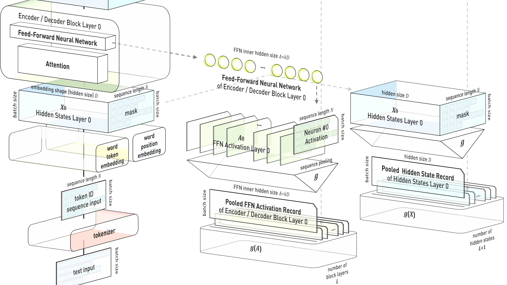
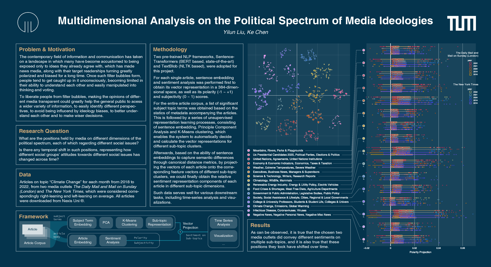
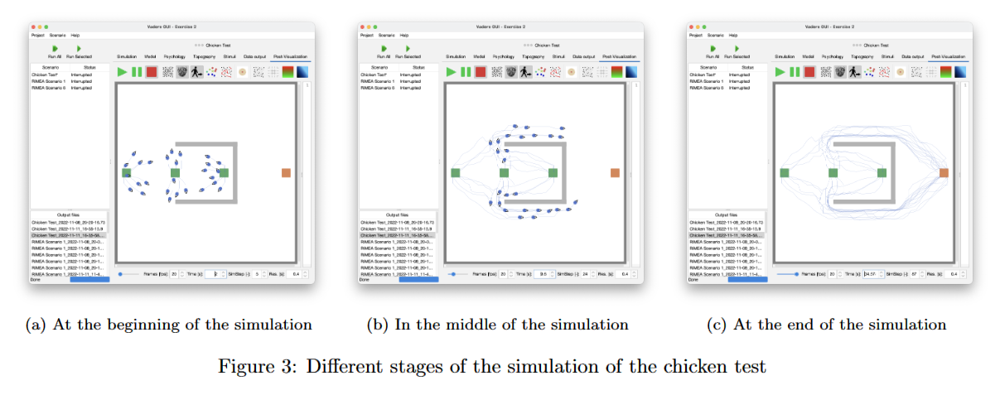
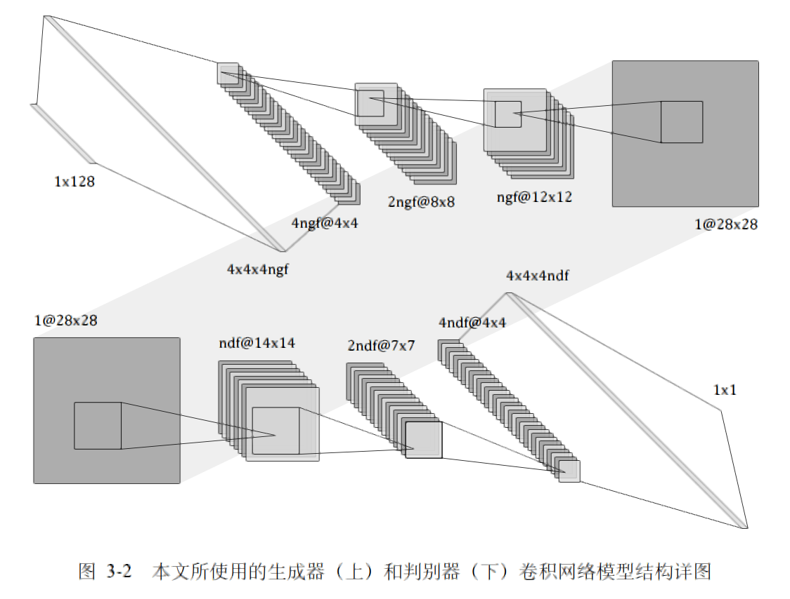
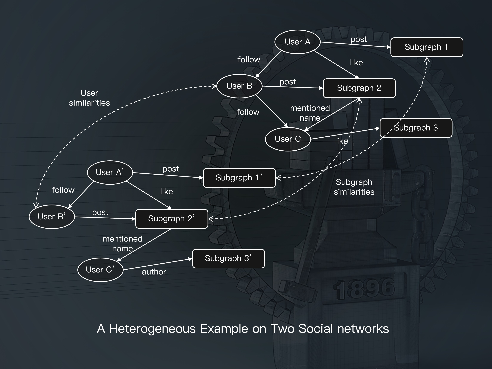
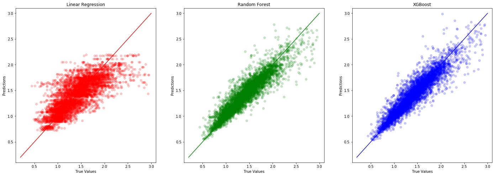
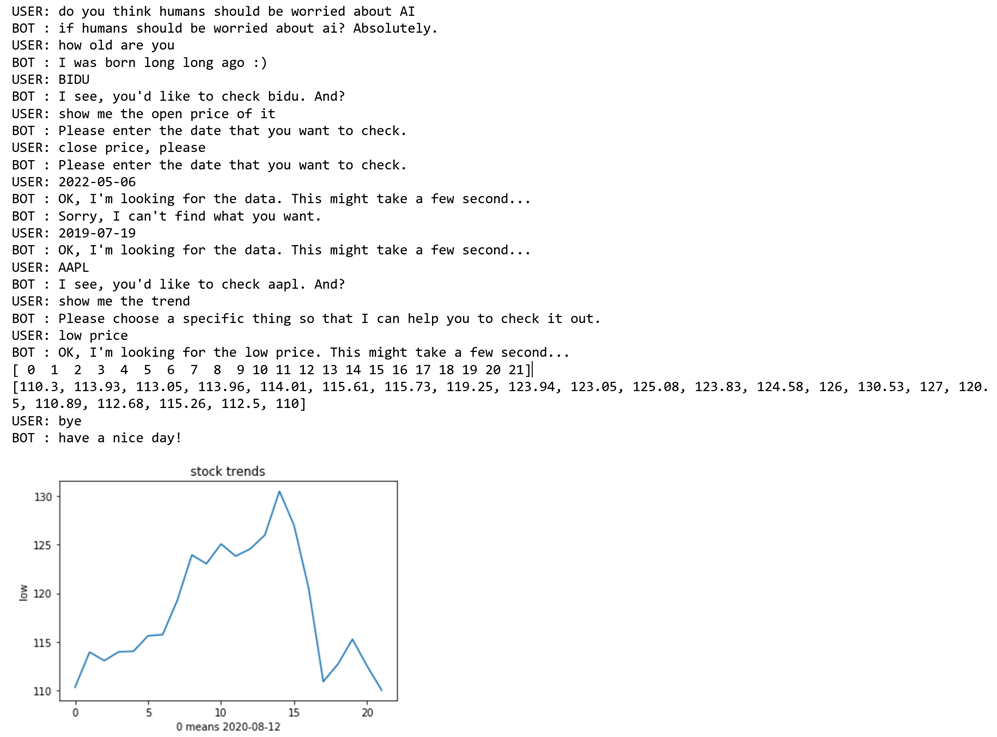
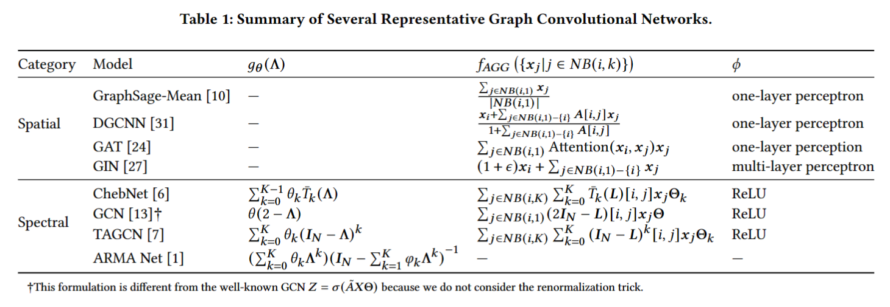
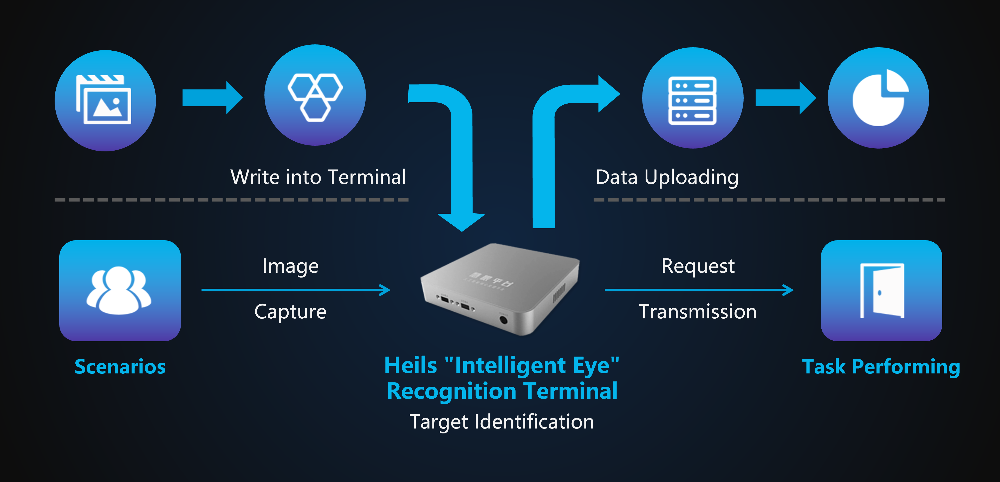
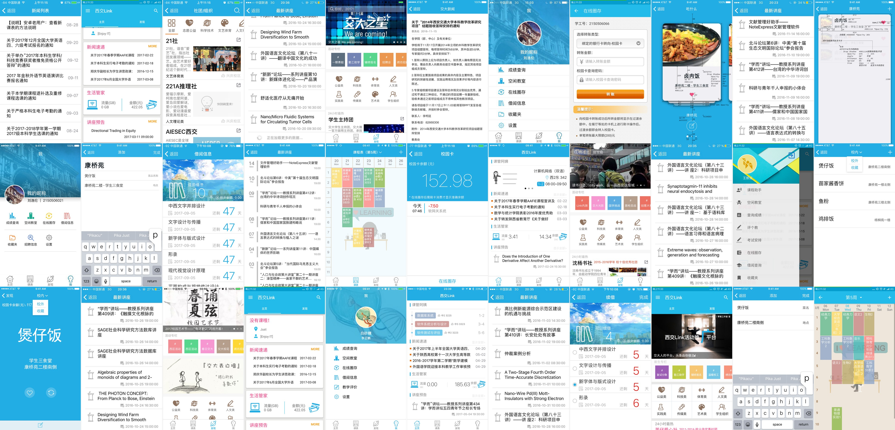

Projects
04.2023 – 10.2023

Professorship of Computational Social Science and Big Data, Technical University of Munich
Tutor: Daniel Matter, Prof. Jürgen Pfeffer
- A light weight method that leverages activation patterns of identified salient neurons from feed-forward neuron networks within transformer blocks across different layers of pretrained LLMs for text classification tasks
- Experiment results suggest that proposed method notably outperforms the original paradigm of LLM for sequence classification
11.2022 – 02.2023

Professorship of Computational Social Science and Big Data, Technical University of Munich
Tutor: Prof. Jürgen Pfeffer
- Large-scale NLP analysis over 5,000 news articles from the Daily Mail and the New York Times concerning the topic of climate change over the period 2018–2022
- Representation learning process consisting of sentence embedding, PCA and clustering to automatically mine vector representations of different sub-topic clusters
- Sentiment analysis and vector projection to obtain the sentiment representation components of each article on different sub-topic dimensions
- Time-series analysis and visualization reveals that different media outlets hold different positions on the spectrum of some sub-topics, and such positions shift over time
10.2022 – 01.2023

Chair of Scientific Computing in Computer Science (SCCS), Technical University of Munich
Tutor: Dr. Felix Dietrich
- Systematically studied and implemented algorithms about modeling of crowds, dynamical systems theory, machine learning techniques, and numerical analysis of complex systems
- Team projects on development of extensions for simulation software (Vadere), validation of models and data, and implementation of neural networks applied to simulation results for modelling pedestrian movement speed based on distances to the nearest neighbors
10.2020 – 07.2021

School of Software Engineering, Xi’an Jiaotong University
Tutor: Prof. Jizhong Zhao, Prof. Wei Xi
- Designed and implemented a deep neural network system for anomaly detection in industrial images, which combines the structures of Convolutional Neural Network (CNN) and Generative Adversarial Network (GAN)
- By reconstructing normal image patterns based on test samples and generating pixel-level masks of potential anomalous regions, the system could simultaneously perform classification, location, and segmentation of anomalies in images, and addresses issues such as small sample problems and background noise.
- Results tested on datasets including MNIST, CIFAR-10, and MVTecAD and has shown high performance with F1 index of 98.76%, 89.16%, and 79.45% respectively.
09.2018 – 07.2021

Ministry of Education Key Lab for Intelligent Networks and Network Security, Xi’an Jiaotong University
Tutor: Prof. Xiaohong Guan, Prof. Chao Shen, Assoc. Prof. Xiaoming Liu
- Conducted research on linking the users across different social networks
- Participated in developing systems for dynamically demonstrating data collected from social networks, introducing textual information to jointly perform alignment on heterogeneous networks, and revealing the potential relationships between different users
08.2020 – 09.2020

Peter the Great St. Petersburg Polytechnic University
Tutor: Dr. Nikita Kudriashov, Dr. Oğul Ünal
- Conducted studies on regression predictions with a variety of machine learning methodologies
06.2020 – 08.2020

MIT IBM Watson AI Lab
Tutor: Prof. Fan Zhang
- A Rasa-NLP based chatbot, with built and trained language models from scratch in specific domains
01.2019 – 11.2019

School of Life Science & Technology, Xi’an Jiaotong University
- Involved in designing a synthetic biology system consisting of engineered E. coli and light-controlled gene circuit to improve sleep quality by selectively producing 2 fragrance molecules: linalool at night and limonene in the morning
- The Team XJTU-CHINA won a gold medal award in iGEM 2019.
07.2019 – 08.2019

Tsinghua University Knowledge Engineering Group (THUKEG)
Tutor: Prof. Jie Tang, Dr. Chenhui Zhang
- Studied cutting-edge methodologies of graph mathematics and data mining in social networks, participated in research on graph pretraining, especially representative graph convolutional networks
07.2017 – 12.2018

Heils Technology Co., Ltd, Shenzhen
- A Computer Vision based commercial solution with combination of hardware and software, being tested and implemented in coal mining and tyre industries and proven to improve productivity
- This team project won a silver award in the 2018 National Undergraduate Entrepreneurship Competition and a gold award in the Shaanxi Provincial Semi-Final of the 4th China “Internet+” College Students Innovation & Entrepreneurship Competition
12.2016 – 01.2018

Data and Information Center, Xi’an Jiaotong University
- Involved in developing, maintaining, and updating the campus mobile application “XJ-LINK” for students to check schedules, grades, library borrowings, teaching assessment, club activities, etc.
- By 2018, the application has over 12,000 users registered, with a peak of 7,000 monthly active users
- The team project XJ-LINK: Design & Implementation of Digital Campus Information Systems Basing on Mobile Internet won a silver award in the 2018 Entrepreneurship Practice Competition of XJTU.